作品集
山谷村落
“清晨，薄雾尚未散去，成群的飞鸟掠过山谷。群山深处，一座鲜为外人所知的村落在晨光中苏醒，世代生活于此的人们以吊桥连接峭壁两岸，与山林相伴而生。”
山谷村落是一座依悬崖而建的聚落，以架高的木屋和悬索吊桥为主要特色，坐落于高耸的砂岩峰林地貌之间。
场景整体使用 UE5 制作，其中木屋和悬索桥等主要建筑元素，先在 Blender 中制作为模块化建筑资产，再通过 Houdini 编写 HDA 工具，并通过 Houdini Engine 接入 UE5，在引擎内实现程序化生成与自定义调整；植被则使用 Unreal Engine 的 PCG 框架生成。

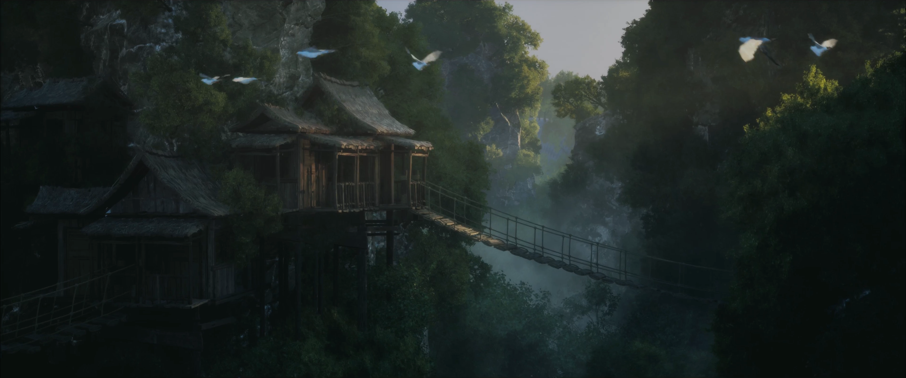
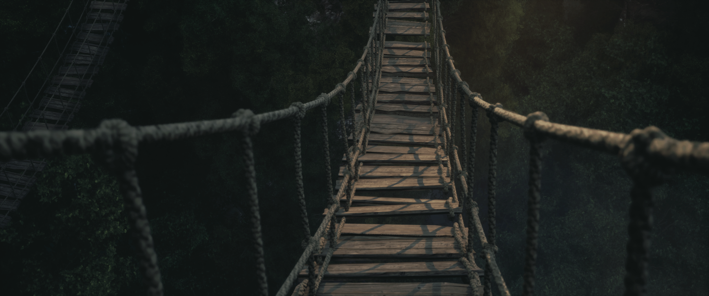
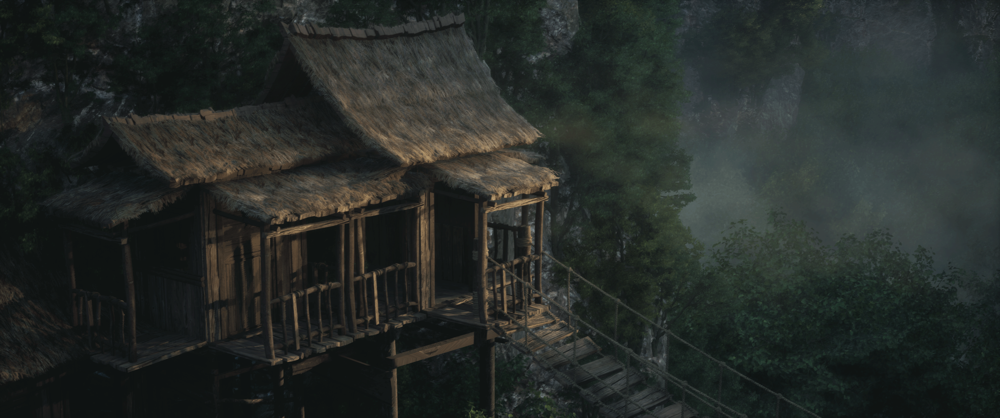
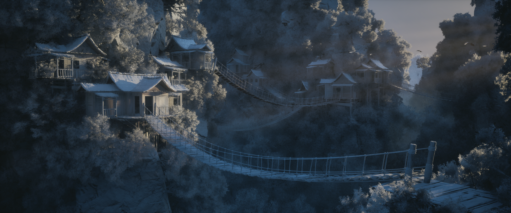
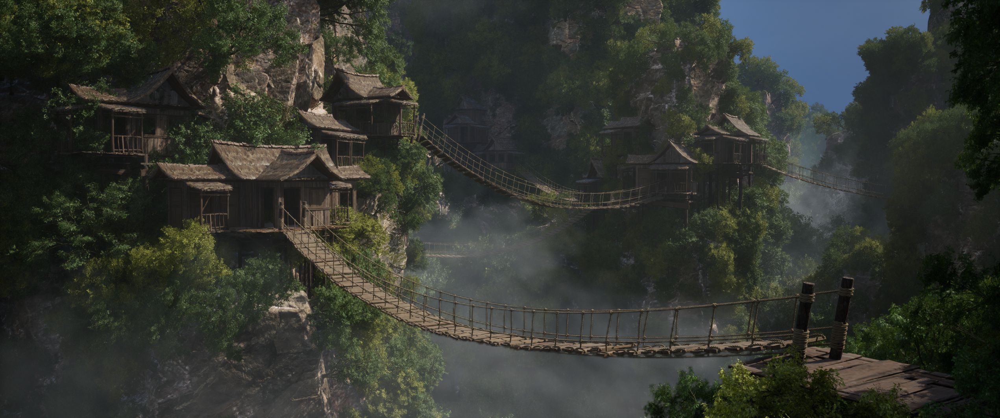

房屋生成工具
这个程序化房屋生成工具基于一套模块化建筑资产库构建，通过组合房间与露台结构来生成木屋，可通过参数调整其尺寸、楼层数量、整体形状和露台形状，可在 Unreal Engine 中快速生成多样化的房屋设计。
1. 使用模块化资产创建资产库
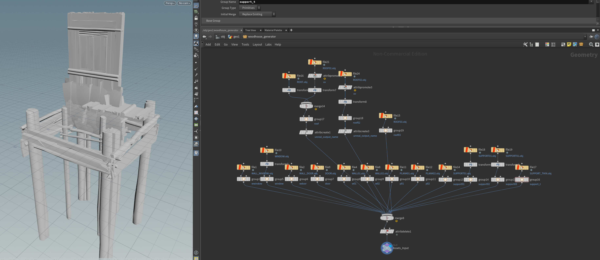
2. 使用可复用的“楼层Subnet”和“屋顶Subnet”构建不同的建筑模块。
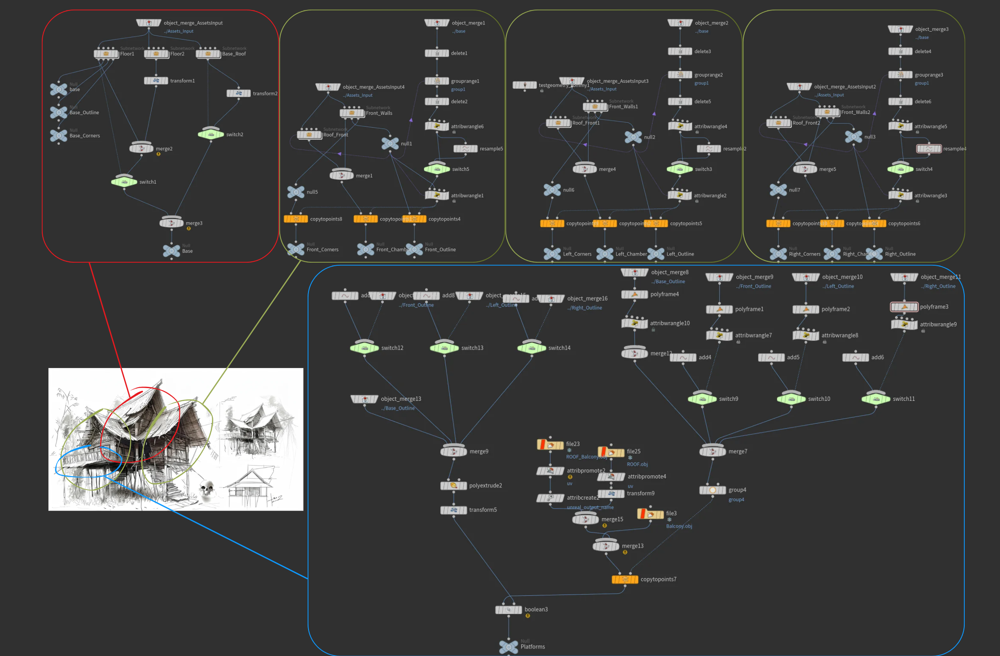
主屋 前厅 左室 右室 露台3. 组合房间和露台，设置材质，创建并连接调整参数
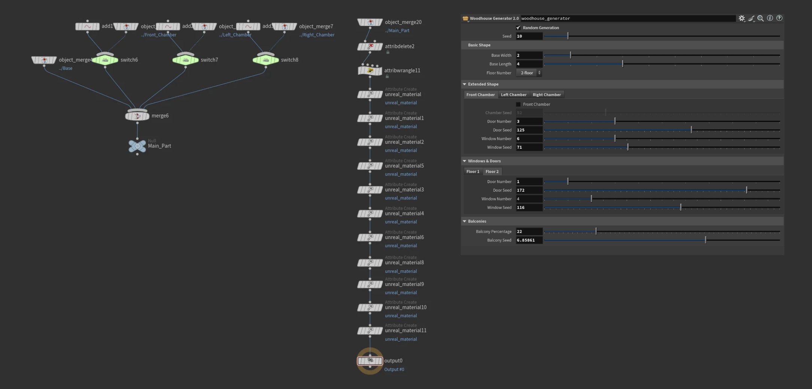
楼层Subnet
- 根据用户输入尺寸创建网格
- 点位与朝向生成
- 类型分配
- 资产放置
- 结构支撑生成
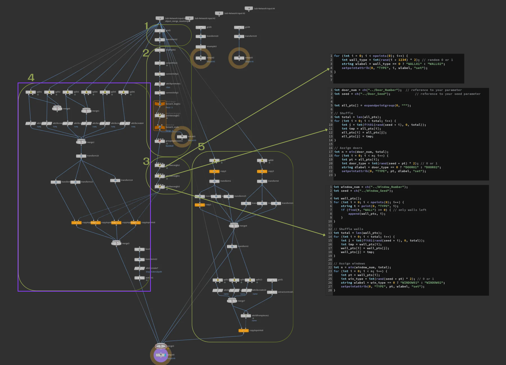
屋顶Subnet
- 生成屋顶基础形状
- 提取面
- 生成屋顶表面
- 边缘细节生成
- 晶格调整形状
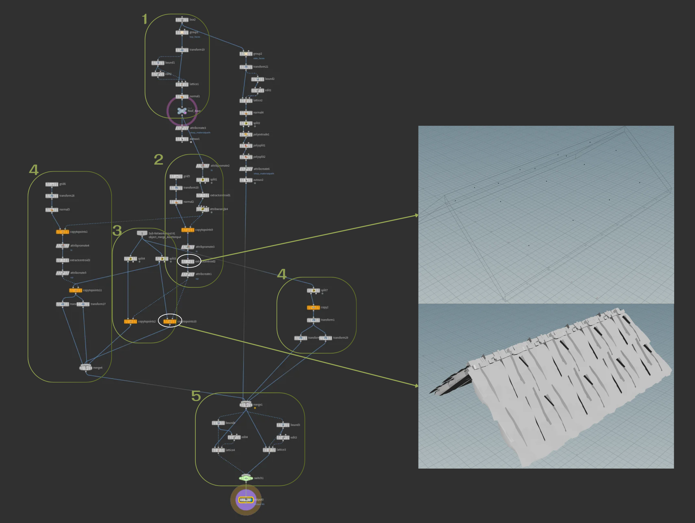
悬索桥生成工具
- 对输入曲线进行重采样与方向校正
- 生成放置点并添加随机变化
- 使用输入的资产创建木板资产库
- 沿桥梁路径放置木板并添加随机变化
- 创建木板上的装饰性绳索缠绕
- 创建绳索曲线、绳结、栏杆和支撑杆
- 使用 Vellum 进行模拟
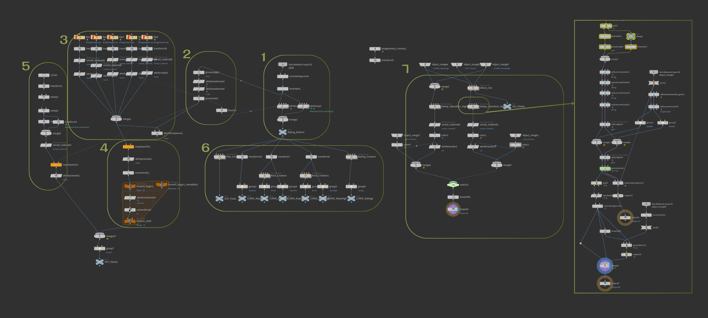
山体植被蓝图
山体植被蓝图结合了 Unreal Engine PCG 与可调节的蓝图参数，可以在任意选定的山体网格模型上采样点并自动散布树木，同时提供直观的美术控制参数，例如植被密度、树木尺寸、和分布衰减。
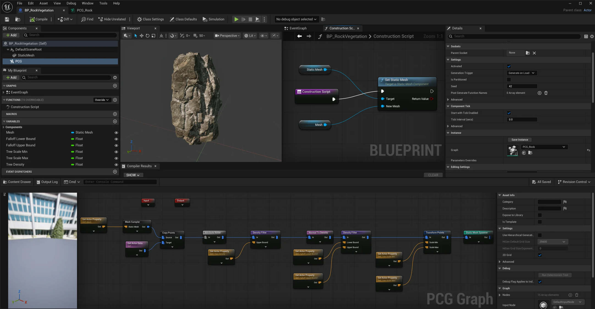
参考图和概念设计
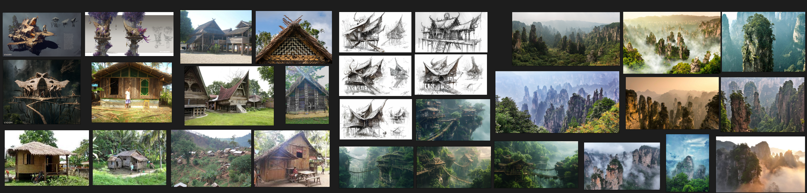
木屋参考图 Midjourney概念设计 张家界照片参考